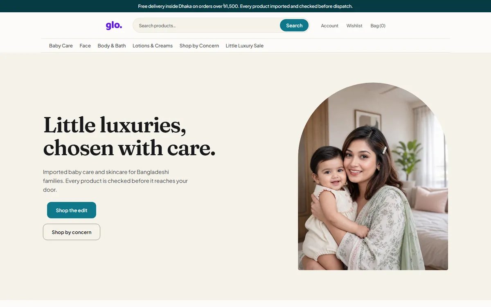
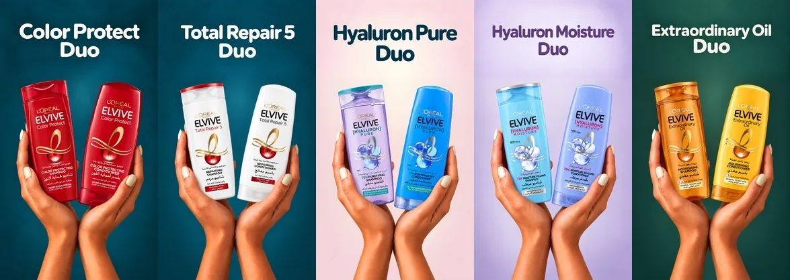

VibeCoding build · E-commerce Live
A beauty store, built with AI from design to launch
Glo sells imported skincare, hair care and baby care across Bangladesh. Its WooCommerce store ran on a page-builder theme. I designed a new one, coded it, wired up the tracking and did the SEO, working with AI coding agents.

At a glance
- Designed in Framer, then rebuilt as a custom theme: homepage, product page, bag, checkout and account.
- SEO from zero. The store had no SEO plugin, so titles, meta, schema, redirects and hub pages live in the theme.
- GA4 through Tag Manager, Search Console, the Steadfast courier and an Apps Script admin panel, all connected.
- Client
- Glo Little Luxury
- Where
- Dhaka, Bangladesh
- Platform
- WordPress + WooCommerce
- Built
- September to October 2026
- Status
- Live
Five AI sessions, one set of rules
I split the work across separate AI sessions, each with its own job. They pass work to each other through numbered handover files (H-001, H-002 and so on), each with steps and acceptance checks. Nothing reaches the live store without the owner's go-ahead.
- BuildOwns the theme code, the GitHub repo and every change to the store. Carries out the other sessions' handovers.
- SEOKeyword research, the page map, on-page specs and the KPI model.
- Apps ScriptAn admin panel and a marketing dashboard, built as Apps Script web apps.
- Social mediaContent calendars, campaign plans and anything a post needs from the site.
- VisualsProduct image jobs: cut-outs, packshots and campaign scenes.
What I built
Every part of the job, from the first design to the tracking.
UI design
Store design in Framer
Homepage, category, product, bag, checkout and account pages, designed in Framer and checked at phone and desktop widths before any theme code.

Web development
A custom WordPress theme
A child theme with its own homepage, product page, bag, checkout and account. 223 commits and 19 merged pull requests on GitHub, with smoke and regression checks in the repo.
SEO
On-page and technical SEO
Product titles and meta, Organization and WebSite schema, redirects for 15 indexed demo pages, and brand and category hubs with live price tables.
GEO and AEO
Written for AI answers
Two-thirds to three-quarters of these beauty searches show an AI Overview. So hub pages open with a short direct answer, use question-shaped headings and show prices in real HTML tables.
SEO
Keyword research, API and manual
Semrush API pulls on the Bangladesh database: a competitor set, a keyword gap, clusters and a page map. When the API units ran out, a manual checklist took over.
Analytics and tracking
GA4, Tag Manager, Search Console, Steadfast
GA4 ecommerce events through Tag Manager, Search Console for indexing, and Steadfast courier data copied into WooCommerce so revenue can count delivered orders.
Integrations and automation
Apps Script tools
An admin panel and a marketing dashboard as Apps Script web apps, in progress. The store already has REST routes so the panel can add each month's offer.
Launches and offers
Offers and product visuals
First Friday, a monthly pre-order offer on duo sets. Bundle boxes that show the saving. AI product scenes and duo thumbnails for the catalogue.

How it came together
Dated from the project's own build logs and deliverables.
- Early Sep
First CSS fixes on the old theme, to learn how it was put together.
- 5 Sep
Homepage designed in Framer, then redesigned after checking it as real HTML.
- 12 Sep
Product page ported into the theme, its sections benchmarked against the market leader.
- 14 Sep
Checkout rebuilt in the theme. GitHub repo started. First live test order.
- 16 Sep
Bag and My Account built from the Framer account pages.
- 22 Sep
Titles and meta for every product. 35 hair care products added. Wrong prices corrected.
- 25 Sep
Brand list cleaned up. The first brand hub goes live.
- 26 Sep
Last Semrush pull: competitor backlinks, SERP features and seasonality.
- 4 Oct
Speed pass: pages stop loading about 45 stylesheets and 36 scripts they never use. Search learns "loreal" and "ponds".
- 18 Oct
Apps Script and social media sessions start, each with its own handover folder.
- 20 to 22 Oct
WebP copies for heavy photos, Steadfast order data in WooCommerce, the monthly offer as data, a brand refresh.
- 25 Oct
Review of three pull requests: two bugs fixed, 39 regression checks, 20 layout checks.
- Next
The first First Friday offer, 6 November.
Store data and analytics belong to Glo Little Luxury and stay private. Market figures are Semrush data for Bangladesh.